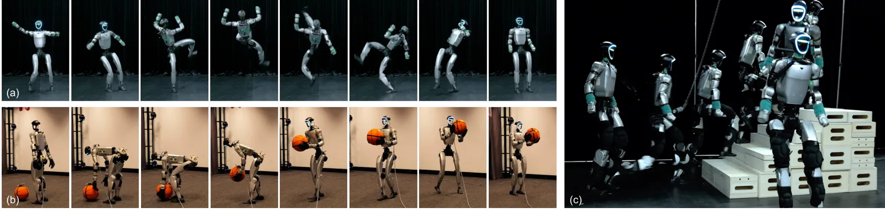

静态网页 · 2026-09-04
可靠状态估计与空间智能每日论文阅读
沿“底层几何 → 3D/4D 表征 → 空间推理 → 具身决策”查看当天候选；按层级、评分、截图和中文摘要筛选，需要原文时可切换 English。
候选论文：2推荐论文：2新论文：2仓库：16新仓库：3
今日概览
- 新增论文：2 篇，均为
is_new=true，均归入 S 级 Geometry Foundation Models / 3D Foundation Models；推荐总数 2（未超过 10 篇）。
- 层级分布：S 2｜A 0｜A- 0｜B 0｜B- 0｜C 0。采集结果中有 5 篇历史论文已过滤，未将
is_new=false 内容补入重点论文。
- 医疗/生物医学/临床过滤：0 篇命中，未发现需排除的医疗噪声。
- 采集警告：3 个 arXiv API 查询收到 HTTP 429；本日报仍以已采集的 arXiv 结果为主，未把 RSS 另行升级为主路径。

新论文 · 日期 2026-09-03 · score 14 · S层 · Geometry Foundation Models / 3D Foundation Models · cs.CV
内容级别：完整单篇海报
作者：Xiaolei Lang, Ze Kang, Zehao Huang, Naiyan Wang
评分 14/10
几何基础模型隐式重建新视角合成视频扩散稀疏视图
一句话工作总结：把稀疏视图的几何锚定与未观测区域生成放进同一个可联合训练的条件链，重点改善相机跟随、跨视角一致性和空洞补全。
RoGe 在稀疏已标定输入和给定相机轨迹下，用前馈隐式重建模型提取沿目标射线查询的几何特征，并将其作为 video diffusion 的条件。重建与生成联合训练，取消 point map 或 3D Gaussian 这一显式中间桥接。
Novel view synthesis from sparse inputs requires both geometric grounding from the observed views and generative priors of unobserved regions, motivating recent hybrid methods that combine reconstruction and g…

新论文 · 日期 2026-09-02 · score 13 · S层 · Geometry Foundation Models / 3D Foundation Models · cs.RO, cs.GR
内容级别：完整单篇海报
作者：Hanyang Cao, Yuetong Fang, Taesoo Kwon, Runyi Yu
评分 13/10
稠密点云对应人形机器人动作重定向Gauss–Newton接触保持
一句话工作总结：这是从几何对应到具身决策数据的桥接工作：学习一次的表面对应关系被复用于整段动作，并通过显式约束优化生成机器人参考轨迹。
UMR 在人类与机器人 canonical T-pose 外部点云之间学习稠密对应关系，再用对应点、法向和接触约束求解受限 Gauss–Newton 重定向。它把不同动作来源和机器人形态统一到点云接口，并提升动作跟踪与交互接触保持。
Humanoid learning increasingly relies on transforming vast and diverse human motion data into high-quality robot reference trajectories. However, retargeting human motion to humanoid robots is challenging due…
精选仓库/项目
默认显示 8 个精选；S/A 领域、新仓库和高分仓库优先，可展开查看完整候选。
okiedocus/gui_sdr_gps_simA cross-platform desktop application, written in rust, that generates real GPS GNSS baseband signals and transmits them through a software-defined radio (SDR). It also provides tools to create and manage the route files (UMF motion files)…
新项目 · Rust · ★ 37 · 更新 2026-09-03 · score 6 · C层 · 纯 GNSS/INS / PPP-AR
新项目 · ★ 0 · 更新 2026-09-03 · score 5 · C层 · 纯 GNSS/INS / PPP-AR
新项目 · C · ★ 3 · 更新 2026-09-03 · score 2 · C层 · 纯 GNSS/INS / PPP-AR
Python · ★ 1 · 更新 2026-09-01 · score 10 · A层 · Robotic Foundation Models / VLA
CNU-Bot-Group/ru4dslam[CVPR Findings 2026] RU4D-SLAM: Reweighting Uncertainty in Gaussian Splatting SLAM for 4D Scene Reconstruction
Python · ★ 18 · 更新 2026-08-29 · score 11 · B层 · Neural Rendering / 3DGS / NeRF
Topics：4d-gaussian-splatting, 4d-reconstruction, computer-vision, cvpr2026, gaussian-splatting
C++ · ★ 3 · 更新 2026-09-03 · score 4 · C层 · 纯 GNSS/INS / PPP-AR
★ 279 · 更新 2026-09-02 · score 10
Topics：3d-geometric-foundation-models, dust3r, mast3r, slam, vggt
qianqqqqqXZQ/4DGS-Edit-and-CompareA tool for editing, aligning, comparing, and exporting 3D point clouds and 4D Gaussian Splatting data. It allows users to move, rotate, scale, and organize point-cloud parts, create keyframe animations, compare two clouds side by side, eva…
Python · ★ 7 · 更新 2026-09-02 · score 9 · S层 · 3D/4D Spatial Perception
还有 8 个候选仓库
yosh-shimizu/LineUQMeasured line-segment localisation uncertainty, posterior ridge re-measurement, and uncertainty-aware VP/Manhattan estimation.
Python · ★ 0 · 更新 2026-09-02 · score 8 · A层 · Robust State Estimation / Uncertainty
Topics：computer-vision, cpp17, line-segment-detection, manhattan-world, slam
Python · ★ 9 · 更新 2026-09-03 · score 6 · A层 · Robotic Foundation Models / VLA
Topics：3d-generation, 3d-reconstruction, 3d-vision, awesome-list, computer-vision
HTML · ★ 0 · 更新 2026-08-30 · score 6 · A层 · Embodied Navigation / VLN / Spatial Reasoning
Python · ★ 2 · 更新 2026-09-03 · score 5 · A层 · Embodied Navigation / VLN / Spatial Reasoning
JackYFL/IndustryNavThe official repository for paper: IndustryNav: Exploring Spatial Reasoning of Embodied Agents in Dynamic Industrial Navigation.
Python · ★ 14 · 更新 2026-09-01 · score 5 · A层 · Embodied Navigation / VLN / Spatial Reasoning
Topics：embodied-agent, embodied-ai, embodied-navigation
ace-trump-tech/embodied-ai-kbEmbodied AI Knowledge Base — VLA / Manipulation / Dexterous / Humanoid / Locomotion / Navigation / World Models / Tactile / Datasets / Sim2Real
★ 0 · 更新 2026-08-31 · score 5 · A层 · Robotic Foundation Models / VLA
HTML · ★ 0 · 更新 2026-08-31 · score 5 · A层 · Embodied Navigation / VLN / Spatial Reasoning
aardvark-platform/aardvark.baseAardvark.Base is the foundation of the open-source Aardvark Platform for visual computing, real-time graphics, and visualization.
C# · ★ 164 · 更新 2026-09-03 · score 3
Topics：aardvark, aardvark-platform, attribute-grammars, datastructures, fsharp